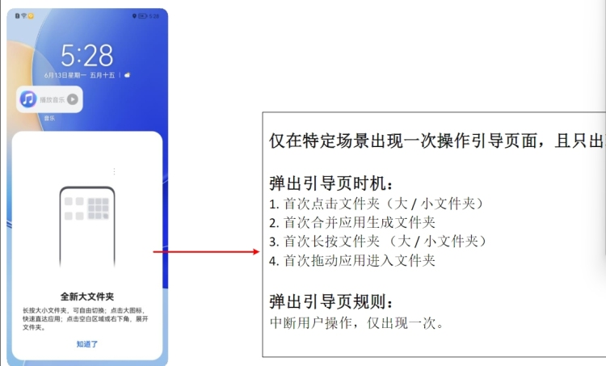

1.将弹窗绘制好，两种方案：一是修改原View，二是使用dialog。
最后方案使用自定义Dialog实现弹窗，自定义了一个xml。外层为linearlayout，包含一个imageview,
3个textview，文字和图片都是居中显式，高宽根据文字内容决定。
处理最后一个textview的点击事件，使用类内接口，在调用时传入接口参数判断点击事件，调用AgreeClick()方法。
用到Window对象设置弹窗大小、位置、动画。通过getWindow()获得Window对象，后set各种属性。新建一个drawable.xml，在里面设置Window的弧度。
window.setGravity(Gravity.BOTTOM);//弹窗位置
window.setBackgroundDrawableResource(R.drawable.large_file_folder_dialog_shape);//弹窗背景
window.setWindowAnimations(R.style.large_folder_dialog);//弹窗动画
window.setDimAmount(0f);//全透明为了设置Dialog窗口大小和布局，使用Resources中的getDisplayMetrics()方法获得DisplayMetrics类对象，通过其中的.widthPixels()和.heightPixels()得到手机的宽和高。
通过WindowManager.LayoutParams创建一个params对象，通过.attr设置window的宽高和相对位置，最后一定要调用window的.setAttributes(params)将参数传递进去才能有效果。
窗口底边高度要配合导航栏高度。直接把mInitY传给window的高度就行。
Launcher launcher = Launcher.fromContext(context);
if (launcher != null && launcher.getDeviceProfile() != null){
mInitY = launcher.getDeviceProfile().getInsets().bottom;
}最后定义一个静态方法show用来给外部类提供方法，方法内部新建一个自定义的dialog并监听点击事件，调用.dissmiss()来消除dialog。
2.弹窗绘制好后实现逻辑，触发的四种逻辑。
1：首次长按文件夹（大/小）。
ItemLongClickListener类下的onWorkspaceItemLongClick()添加逻辑。因为所有Item的长按逻辑都在这个方法里实现，所以需要进行判断。通过view.getTag()判断是文件夹还是app快捷方式。判断完成后在进行show的调用。
2：首次点击文件夹（大/小）。
ItemClickHandler类下的onClickFolderIcon()和onClickBigFolderIcon()中添加逻辑。根据SharedPreference保存的数据判断NewLargeFolderDialog.show()的调用。
3：首次合并应用形成文件夹。
合并生成文件夹的逻辑是在Workspace.java下的createUserFolderIfNecessary()方法里实现，只需要在方法return之前调用show()方法就行。
4：首次拖动应用进入文件夹）
合并生成文件夹的逻辑是在Workspace.java下的addToExistingFolderIfNecessary()方法里实现，和第三条同理。
3.设置sharedPreference，保存是否是第一次操作的参数，bool类型。
因为要实现第一次点击之后就不需要弹出Dialog，需要一个数据进行判断，SharedPreference保存的数据会存在一个文件下，launcher中在Utilities中定义了一个getPref(Context context)方法，返回的就是一个SharedPreference对象，只需要在调用时传入context就好。
存入数据的逻辑是在show()方法中的监听点击事件里定义，在点击“知道了”以后put一个bool类型的值然后apply，接着走dissmiss()，这样只要走过四种逻辑中的任意一个，就会写入值。写入需要使用SharedPreferences.Editor对象编写。
SharedPreferences.Editor mUserAgreeSharedPref = Utilities.getPrefs(context).edit();
mUserAgreeSharedPref.putBoolean("first_new_large_folder_dialog_notification", false);
mUserAgreeSharedPref.apply();取出数据是在判断四种逻辑时调用即可，直接通过SharedPreferences对象调用get方法取出数据进行判断。
boolean first_notification = Utilities.getPrefs(v.getContext()).getBoolean("first_new_large_folder_dialog_notification", true);删除sharedpreference中特定的key
mUserAgreeSharedPref.remove("first_new_large_folder_dialog_notification").commit();4.LottieAnimationView的使用
首先需要加入配置文件
//Lottie动画
implementation "com.airbnb.android:lottie:3.6.0"在需要放置动画的xml中放置Lottie
<com.airbnb.lottie.LottieAnimationView
android:id="@+id/new_large_file_dialog_lottie"
android:layout_width="match_parent"
android:layout_height="wrap_content"
app:lottie_autoPlay="true"
app:lottie_loop="true"
app:lottie_fileName="data.json" //JSON文件需要放在 src/main/asset中
app:lottie_rawRes="@raw/animation" //JSON文件需要放置在 src/main/res/raw中与上面二选一即可
/>接着在Java文件中配置Lottie,其中新建LottieAnimationView对象通过R.id找到对应的law，可以设置是否自动播放，是否循环播放等。最后直接play即可。
private LottieAnimationView mLottieAnimationView;
//Lottie AnimationView
mLottieAnimationView = (LottieAnimationView) findViewById(R.id.new_large_file_dialog_lottie);
mLottieAnimationView.setImageAssetsFolder("data.json");//配置JSON
mLottieAnimationView.loop(true);//循环播放
////设置X轴方向上的缩放比例，0f为不可见，1f原始大小 Ps.原setScale方法在2.0.0版本后已弃用
//mLottieAnimationView.setScaleX(0.5f);
////设置Y轴方向上的缩放比例
//mLottieAnimationView.setScaleY(0.5f);
mLottieAnimationView.playAnimation();//播放动画为了防止内存泄漏，应该在动画不需要播放的时候释放Lottie动画。
mLottieAnimationView.setImageAssetsFolder(null);//传一个null，防止动画在后台继续播放